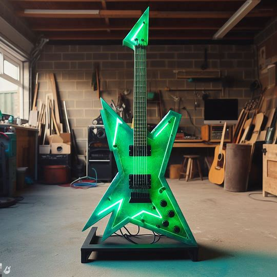
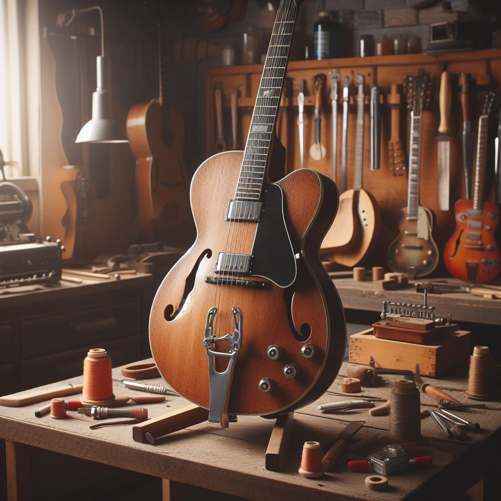

Commissions in any style!
-
 Experimental -
 Vintage
Who is Spencer?
During the 1990s, I was an 18 year old psychobilly kid rocking out to The Cramps and Demented Are Go. An amateur cartoonist and zine-fiend, of course I fell in with the trike and motorcycle mod scene. Too bad it didn’t bring in a lot of money. At 24, my mother (love you) kicked me out of the basement; guess it was time to ‘get a real job.’ Turns out art and engineering make a beautiful marriage in architecture. Once I drew my first blueprint (of a skate park, no less), I was hooked.
As the years went by, I felt the urge to break through the blue and white grid. Tired of designing for others, I found himself back in the garage one night contemplating the flat tire on my wife’s blue Prius (I swear it ain't mine), 3 bedroom home in the ‘burbs, 2.5 kids sleeping peacefully upstairs. I felt the rumblings of kustom kulture, the need to break and remake and tear shit up.
Then, I saw it - a dusty, banged up stratocaster tucked in a corner near some half-opened paint cans. I’d almost forgotten it was there. What had it been, almost 30 years?
I knew what I had to do. I threw it on my workbench, knocked open a bottle of Steel Reserve, and tore that guitar’s guts out.
That’s how Spencer’s Guitars was born.
Guitar Building Process
This ain't me, it's the luthier Adam Koekkek! My process is simliar (maybe with a bit more grease and beer). In case you're wondering why it takes 3-5 weeks to make a guitar, now you know. Respect the process.
Contact
For pricing, repairs, special requests, or music recs:
- stringz@spencersguitars.com
- 213-546-879
Spencer's Guitars
666 Inferno Lane,
Hell, Michigan, 12345